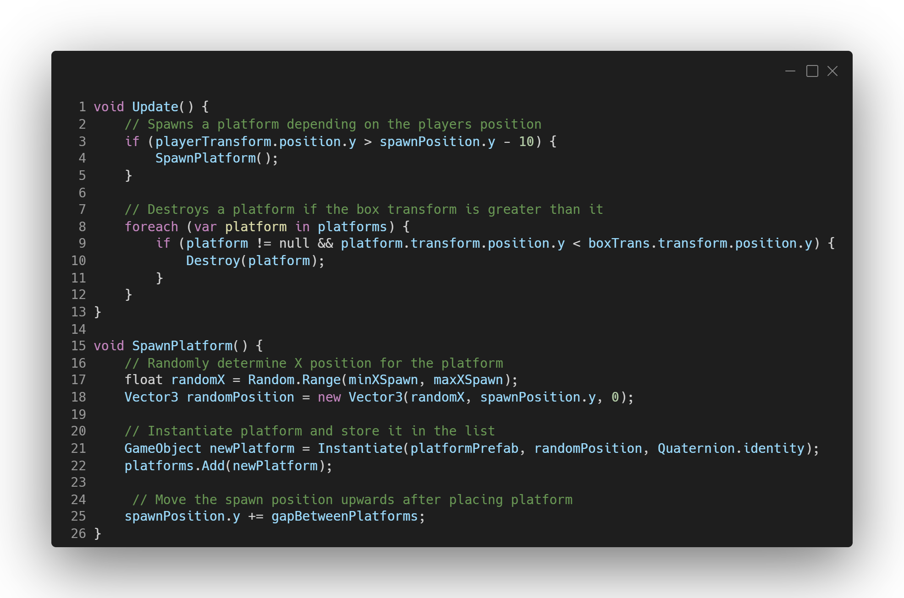
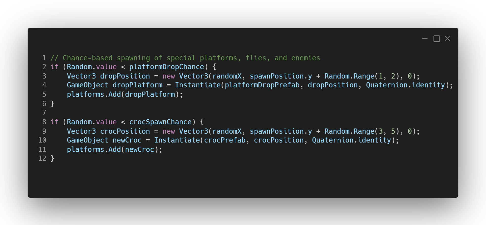
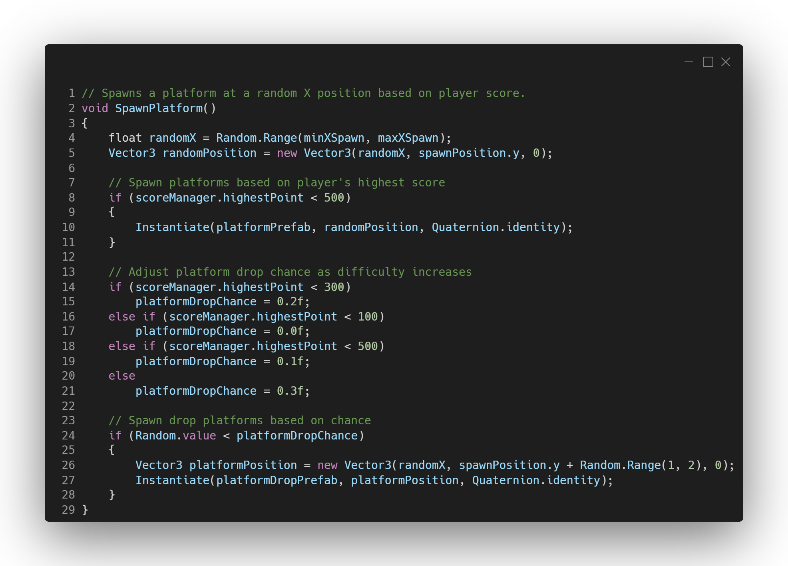

Description
In Frolic Frog, platforms, enemies, and other obstacles are dynamically spawned as the player progresses upwards, ensuring a unique playthrough each time. The game strikes a balance between easy and challenging platforms to keep players engaged. The spawning system is based on the player's position, ensuring that they are continually challenged as they ascend. Implementation
Platforms are spawned at runtime based on the player's current height, with randomisation applied to their X and Y coordinates. Different platform types (e.g. breakable platforms, moving platforms, lily pads) are selected accordingly depending on their probability. To enhance player engagement, I implemented a difficulty curve that gradually increases as the player ascends. Design Approach
At the start, players encounter a high density of platforms and fewer obstacles, making it easier to learn the mechanics. As players progress higher, the number of platforms decreases while the frequency and variety of obstacles increase, creating a more challenging experience.Click for details
×
-
Platform Spawning
This snippet focuses on the primary platform spawning logic, its the foundation for the procedural generation and shows how the game ensures platforms are consistently generated as the player progresses.
Special Platform & Obstacles
This snippet shows how special platforms such as breakable platforms or enemies are added dynamically with a random chance.
Difficulty Curve
The code snippet shows the platforms are generated depending on the player's current score. Lower scores increase the likelihood of spawning drop platforms, making it easier for players to learn the mechanics of the game. As players progress and their scores rise, the spawning logic adjusts, providing a gradual increase in difficulty and challenge.
Challenges
Randomised Spawn Locations
Challange:
Ensuring all the platforms spawn in varied but accessible locations to prevent players from becoming stuck or overwhelmed.
Solution:
I implemented constraints to the x coordinates for platform spawning based on player position and predefined limits to maintain consistent accessibility.
Dynamic Difficulty Adjustment
Challange:
Designing the spawning logic to increase difficulty without creating frustration, particularly for new players.
Solution:
Gradually reducing the number of platforms and increasing the variety and frequency of obstacles as players ascend, ensuring they have enough safe areas to practice their skills.